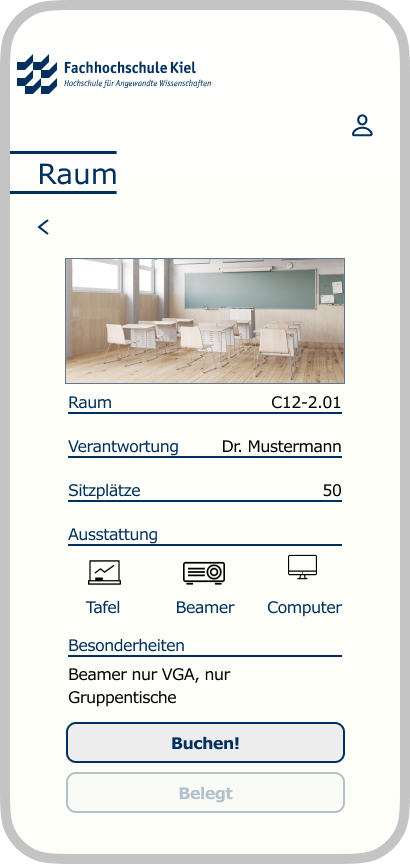

Room App

Im Rahmen des Anforderungsmanagement-Moduls konzentrierte sich unser Team darauf, einen Prototypen für eine Raumbuchungs-App zu entwickeln, die speziell auf die Anforderungen der Fachhochschule Kiel zugeschnitten ist. Anstatt direkter Gespräche, diente uns eine Sammlung aufgenommener Interviews mit Dozenten, Studierenden und anderen Stakeholdern als Grundlage, um tiefgreifende Einblicke in die Bedürfnisse und Vorstellungen der Nutzer zu gewinnen.
Anforderungsanalyse
Durch das sorgfältige Anhören und Analysieren der Audioaufnahmen konnten wir ein klares Bild von den diversen Anforderungen zeichnen, die an eine solche App gestellt werden. Diese Methode stellte eine herausfordernde, jedoch ungemein wertvolle Erfahrung dar, indem sie uns zwang, genau hinzuhören und aus den gegebenen Informationen präzise Anforderungen abzuleiten, ohne auf unmittelbares Feedback angewiesen zu sein.
Anforderungsmanagement-Methoden
Um die ermittelten Anforderungen systematisch zu behandeln, wandten wir verschiedene Anforderungsmanagement-Methoden an, einschließlich der Anforderungsspezifikation und der Validierung. Dieser Prozess half uns, die Anforderungen nicht nur zu dokumentieren, sondern sie gezielt in die Gestaltung unseres Prototypen einfließen zu lassen. Dabei kam es besonders auf die Fähigkeit an, Anforderungen angemessen zu priorisieren und umsetzbare Spezifikationen für den Prototypen zu entwickeln.
Team Kommunikation
Obwohl wir nicht direkt mit den Stakeholdern in Kontakt traten, erforderte die Arbeit eine intensive Kommunikation innerhalb unseres Teams, um die aus den Aufnahmen gewonnenen Erkenntnisse effektiv zu teilen und in den Entwurfsprozess einfließen zu lassen. Diese Herausforderung stärkte unseren Teamgeist und verbesserte unsere Fähigkeit, auch ohne direkte Rückmeldungen, gemeinsam an einem Ziel zu arbeiten.
Prototyp Entwicklung
Das Hauptergebnis unserer Arbeit ist ein durchdachter, benutzerfreundlicher Prototyp einer Raumbuchungs-App, der die zentralen Bedürfnisse und Wünsche der Hochschulgemeinschaft der FH Kiel berücksichtigt. Der Prototyp illustriert, wie Nutzer auf einfache Weise Räume suchen, Verfügbarkeiten prüfen und Buchungen vornehmen können. Durch diesen Projektansatz konnten wir nicht nur unser theoretisches Wissen im Anforderungsmanagement praktisch umsetzen, sondern auch wertvolle Erfahrungen in puncto Teamarbeit und Anforderungsanalyse sammeln.
Abschließend hat uns dieses Projekt gezeigt, wie entscheidend eine gründliche Anforderungsanalyse für die Entwicklung benutzerzentrierter Lösungen ist, selbst wenn die Kommunikation mit den Stakeholdern indirekt erfolgt. Es unterstreicht die Bedeutung des Anforderungsmanagements als Grundlage für erfolgreiche Design- und Entwicklungsprozesse.